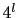
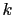
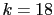
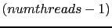

Earlier updates: Version 1.2.3
Version 1.2.2
Version 1.2.1
Version 1.2 includes a number of major changes, which should be described in more technical detail in forthcoming publications. Changes include:
Version 1.1.2 differs from LMAT-1.1.1 in only the following:
We add support for null-model generation (Section 7) where random reads are now explicitly drawn from a range of GC content values.
This software package (LMAT) contains source code with the initial work described in "Scalable metagenomic taxonomy classification using a reference genome database". The web site for LMAT is http://computation-rnd.llnl.gov/lmat.
The basic requirement is x86_64 Linux (tested with 2.6.32-358 or later kernels). Running on other 64-bit platforms is unconfirmed but feasible (please share your experiences). Our approach is divided into two steps:
Preparing a full DB involves several steps and takes many hours. ("Full" refers to a database that contains k-mers from all viral, prokaryote, fungal and protist genomes.)
Our current ``Full'' database is 460 GB in size, smaller than what we used for our July 2013 publication in Bioinformatics due to several of the key optimizations within this release, yet larger than previous database releases due to a large increase in available reference sequences. We have several smaller ``marker'' database available for ftp download. See the sec:downloads Section for more information about the various LMAT databases availble for download.
An additional download required for running LMAT is the collection of ``runtime-input'' files needed to go along with the database (about 300MB in total). For convenience, we include a script to perform these ftp downloads, details below.
Our databases are available for download from the ftp site:
gdo-bioinformatics.ucllnl.org/pub/lmat.
First download the external datafiles needed to run LMAT, these include the required NCBI taxonomy information, gene annotation and other support data.
The most recent marker library is available with or without human k-mers included and are under 20 GB.
cd <LMAT-root-dir>/bin # <name-of-input> reflects current taxonomy data used - current version is: 04072014 ./get_db.sh --dtype=inputs --name=<name-of-input> --outdir=<LMAT-root-dir>/runtime_inputs # set the environment variable to point to the location setenv LMAT_DIR=<LMAT-root-dir>/runtime_inputs # Download the marker libary, set <db-name> to kML.v4-14.20.g10.db # or kML+Human.v4-14.20.g10.db ./get_db.sh --dtype=db --name=<db-name> <data-dir> # Download the gene annotation libary, set <db-name> to # lmat.genes.7-14.db (for gene annotation only, latest requires # 128 GB DRAM or SSD) ./get_db.sh <db-name> <data-dir> # Note that LMAT uses a .db extension for its database files, # omitted in the command syntax above
Due to the time and effort involved in constructing a reference DB, we suggest that first-time users begin with our Marker database. In this case you can skip the sections "Searchable K-mer/Taxonomy Database Preparation", "Custom Null Model Generation.". Our sec:quick-start instructions give a brief example of how to perform classification using the downloadable Marker DB and included application binary executable.
We include a shell script to download and assemble the larger marker library as it is broken into 5 separate compressed files. Run ./get_db.sh from LMAT-1.2.4/bin. Alternatively, each file can be downloaded separately to reduce the risk of incomplete downloads, then uncompressed and merged to create the whole marker database file.
We highly recommend the use of a "ramdisk", Solid-State Drive, or other flash-based storage (eg. PCIe card) to store the uncompressed DB files. Make sure that there is enough space on the device to hold the relatively large file(s). Save these file(s) to a directory on that storage device and use gunzip to uncompress the *.gz.
The files must remain with read-write ("rw") file access permissions set or LMAT cannot open them.
Additionally, we encourage users to install the DI-MMAP runtime (optional) if considering use of LMAT databases on flash-based storage. Please see https://bitbucket.org/vanessen/di-mmap for more information. Accessing the database at run-time over a NFS mounted file system is not recommended.
Tip: If a ramdisk is not available on a large (512GB+) server, we recommend that the database be ``precopied'' into the system's buffer cache (from network attached or local HDD storage) prior to running LMAT. LMAT uses memory mapped files so pages in the database are loaded on demand. Regular system prefetching of pages under the memory-mapped approach is slow unless run from an SSD. The effectiveness of precopy can depend on your system's buffer cache policy: some evict pages early so the buffer will not hold the LMAT database from the precopy to the following LMAT execution. To perform the ``precopy'':
% cat <database-filename> > /dev/null.
This section gives instructions in brief on how to perform scoring and classification on an input query set using the Marker DB. The example in this section is covered in more detail in subsequent sections of this manual. Be sure you have successfully downloaded the reference database files as described above in sec:over-a (A) above. Once that is complete, you can run ``make'' to build binary executable application and run the scoring portion. To complete the example execution below, you need to provide:
Recommended configuration setting to use LMAT:
disable address space randomization (if not already set).
As super-user: echo 0 > /proc/sys/kernel/randomize_va_space
-or-
Use the ``setarch'' command using the -R option (see man page or setarch documentation online for more details.)
Note this step is recommened to reduce any potential memory management conflicts. So far this step does not appear to be required and if address space randomization cannot be disabled, LMAT should still run.
Example scoring and classification using LMAT with the Marker DB:
# The environment variable LMAT_DIR must be set and point to the directory containing the files given in the runtime_inputs directory (see above for download information)
# for example in bash:
export LMAT_DIR=../runtime_inputs
# or csh:
#setenv LMAT_DIR ../runtime_inputs
cd LMAT-1.2.4/
# build binaries
make
# create a temporary directory to store LMAT output
mkdir tmp
# unpack the simple example, includes 1000 reads from 3 organisms, and example LMAT output
cd example
tar zxvf example.tgz
cd ..
cd bin
There are three main analysis commands:
1) assign taxonomic labels to reads
2A) assign gene labels to reads
2B) compute k-mer abundance statistics
Step 1 must be run prior to running the optional steps 2A and 2B. Steps 2A and 2B can be run independetly of each other.
Note that output can vary slightly depending on the choice of the database.
## 1) Assign taxonomic labels to each read and report summary of organism contents
./run_rl.sh --db_file=<path-to-library/kML+Human.v4-14.20.g10.db --query_file=../example/simple_list.1000.fna --odir=../tmp --threads=8
# Output files:
simple_list.1000.fna.kML+Human.v4-14.20.g10.db.lo.rl_output.0.30.fastsummary.species - Bins reads by species rank and reports the top strain match (where possible)
simple_list.1000.fna.kML+Human.v4-14.20.g10.db.lo.rl_output.0.30.fastsummary.plasmid - Bins reads assigned to plasmids.
simple_list.1000.fna.kML+Human.v4-14.20.g10.db.lo.rl_output.0.30.fastsummary.genus - Bin reads by genus rank
simple_list.1000.fna.kML+Human.v4-14.20.g10.db.lo.rl_output.0.30.fastsummary - Bins for the raw LMAT search results, read bins are in rank flexible categories
simple_list.1000.fna.kML+Human.v4-14.20.g10.db.lo.rl_output.[0-7].out - individually taxonomically labeled reads; NOTE these files will take up substantial disk space as more runs are completed. They are retained for quick access for pulling reads of interest for further analysis
## 2A) Assign gene identifiers to each read a report sumary of gene contents
find ../tmp -name simple_list.1000.fna.kML+Human.v4-14.20.g10.db.lo.rl_output[0-9]\*.out > ../tmp/rl_output.flst
./run_gl.sh --db_file=<path-to-gene-database/gene.20mer.db --ilst=../tmp/rl_output.flst --odir=../tmp --filesum=../tmp/simple_list.1000.fna.kML+Human.v4-14.20.g10.db.lo.rl_output.0.30.fastsummary
# Output files:
simple_list.1000.fna.kML+Human.v4-14.20.g10.db.lo.rl_output.ras.flst.gene.20mer.db.rl_output.0.1.20.genesummary - gene content summary
simple_list.1000.fna.kML+Human.v4-14.20.g10.db.lo.rl_output.ras.flst.gene.20mer.db.rl_output[0-7].out - individually gene labeled reads
# modifies .genus, .species, etc.
## 3) Run content summarization
find ../tmp -name simple_list.1000.fna.kML+Human.v4-14.20.g10.db.lo.rl_output[0-9]\*.out > ../tmp/rl_output.flst
./run_cs.sh --db_file=<path-to-gene-database/gene.20mer.db --ilst=../tmp/rl_output.flst --odir=../tmp --filesum=../tmp/simple_list.1000.fna.kML+Human.v4-14.20.g10.db.lo.rl_output.0.30.fastsummary
# Output files with supplementary information
simple_list.1000.fna.kML.18mer.16mit.db.lo.rl_output.0.30.nomatchsum - Count reads not assigned a taxonomic ID
simple_list.1000.fna.kML+Human.v4-14.20.g10.db.lo.rl_output.0.30.fastsummary.summ.leftover - Count reads / taxnomic IDs exluded from the final *.summ file (due to not meeting minimum score/abundance thresholds)
# Description of tab delimited columns for each type of output file
*.fastsummary file - Weighted (by taxid assigned score) read count, non-weighted read count, NCBI taxonomy identifier, taxonomy rank and name
*.species - Average read score, Total weighted read count, Count of reads assigned to organism, NCBI taxnomic species ID, taxonomic name, Total strain read score, Count of reads assigned to top strain, NCBI taxonomy strain ID, taxonomy name
(When strain information is not reported it means no strain information could be recovered)
*.genus - Average read score, Total weighted read count, Count of reads assigned to organism, NCBI taxnomic genus ID, taxonomic name
*.plasmid - Average read score, Total weighted read count, Count of reads assigned to organism, taxnomic plasmid ID (frequently a custom LMAT ID), taxonomic name (frequently a fasta header from the original plasmid source sequence)
*.nomatchsum - gives basic information on all reads not included in the taxonomic profile.
ReadTooShort -- Gives number of reads with too few valid k-mers (minimum of 30 required)
NoDbHits -- Number of reads with no matching k-mers in the database.
LowScore -- Number of reads assigned a taxonomic label with a score below the minimum threshold (0)
*.genesummary - read count assigned to gene, LMAT NCBI taxonomic ID, NCBI taxonomic ID for source gene, NCBI Gene ID, NCBI Locus tag, description, gene type and protein accession.
*.lo.rl_output[0-9]*.out - query read identifier, query read sequence, scoring statistics (average,standard deviation, # of k-mers), list of taxid,score pairs, final LMAT taxid call with score and match type. Match types are MultiMatch (lowest common ancestor), DirectMatch (best match), NoMatch (no database match).
Note when run\_gl.sh is run - and the *fastsummary file is provided as input, the script will regenerate the *species file with additional gene information as follows:
Column 4) Pcnt . rRNA - Percentage of reads in bin that were assigned to a rRNA gene.
Column 5) No. Genes - Number of genes associated with the taxonomic bin. Note this number must be viewed with caution, since multiple closely related genes may be reported but may reflect a single gene.
Column 6) No. Gene Reads - Number of reads in bin that were assigned to a gene.
The original columns starting at column 4 are shifted over to the right.
simple_list.1000.fna.kML+Human.v4-14.20.g10.db.lo.rl_output.0.30.fastsummary.summ.RANK_kmer_cov
Reports k-mer abundance distribution profiles for each taxonomic bin for the selected rank - RANK (e.g. species, genus etc.).
The file reports for each taxononomic bin the number of distinct k-mers observed in the reads assigned to the bin and the total number of k-mers observed in the bin.
With enough reads in a taxonomic bin, a distribution is also reported with 4 columns, for example:
10995 14 1 50
Where the first column is the NCBI identifier of the bin, the second column is the k-mer value (here k=14) and the third column reports the number of times k-mers were observed and the fourth column is the number of k-mers that were observed. In the example above, there were 50 distinct 14-mers that were found once.
Collectively these k-mer statistics are meant to provide a measurement tool for assesing the coverage of taxonomic bin.
simple_list.1000.fna.kML+Human.v4-14.20.g10.db.lo.rl_output.0.30.fastsummary.ordered.RANK
provides a modified version of the *.fastsummary.RANK files (where RANK is species,genus, etc.)
Additional columns are included reporting k-mer coverage statistics. Each additional tab delimited column is a 4-tuple of the (a,b,c,d) where a is the value of k for the k-mer, b is the second peak in the k-mer abundance profile taken from the *.RANK_kmer_cov file described above. Value c is the distinct k-mer count and d is the total count of k-mers assigned to the taxonomic bin.
# Additional example run configurations
# run just the full database
./run_rl.sh --db_file=<path-to-database>/lmat-4-14.20mer.db --query_file=<your-fasta-file> --odir=<path-to-output-directory>
Note that the marker libraries have a smaller range of values making 0 (or values close to 0) the best cutoff. For the full libraries the range of values is larger giving the user some flexibility to choose higher cutoff values of 1 or 2 to select only the highest confidence tax calls (although 0 is still a reasonable default cutoff). Choice of cutoff depends on the type of sample and analysis. The default (threshold of 0) is meant to maximize sensitivity to detect more distantly related organisms. It is recommended to run with 0 cutoff first, and sort the *.species file by the first column (average read score), which will give you an indication for the range of read scores and where to set the cutoff higher to reduce the potential for false positive calls.
Check https://sourceforge.net/p/lmat/wiki/ for additional example information.
If the pre-built executable does not load on your system, proceed with the sec:compile step below.
CMake 3.1
gcc 4.4.X
python 2.6
OpenMP
MPI (optional, for use in building a Reference Database)
If using MPI (optional; only used in some drivers when building a DB from scratch) set up environment variable using your shell syntax; typically:
export HAVE_MPI=1 or: setenv HAVE_MPI 1
(note: MPI is not used in the Scoring and Classification steps)
LMAT-1.2.4/bin contains prebuilt executables for all c++ drivers. If these do not work on your system, cd to LMAT-1.2.4 and run make
LMAT has several prebuilt databases available for download. Use the bin/get_db.sh utility to automatically perform downloads from the ftp site, mentioned above, using any of the following databases.
Note that the database organization changed between releases. Current databases use the same file and key names.
Current databases:
| Keyname/filename | Description | File size(GB) |
| lmat-4-14.20mer.db | Full-sized database for extensive read binning (LMAT-Grand) | 460 |
| kML.v4-14.20.g10.db | Microbial marker database (small database for fast microbial profiling) | 17 |
| kML+Human.v4-14.20.g10.db | Microbial marker database with explicit human read tagging (small database for fast microbial profiling) | 18 |
| lmat.genes.7-14.db | Gene database for gene name binning | 120 |
| lmat-world-region | Database for binning human reads by world region | 2 |
Previous databases (using 9/4/13 sequence data):
| Database key-name (for get_db script) | Filename | File size (GB) |
| kML-18mer-large | kML.18mer.no_prune.16.db | 80 |
| kML-18mer-medium | kML.18mer.16bit.db | 52 |
| kML-18mer-small | kML.18mer.16bit.reduced.db | 16 |
| kFull-20mer | m9.20mer.16bit.g1000.db | 373 |
| gene-20mer | gene.20mer.db | 52 |
Note: some drivers and scripts described below contain hardcoded paths, so execute from within the src directory.
mkdir WORK #assume your reference genome fasta file is: WORK/test.fa. #Note to get started we provide a list of genome files from fall 2012, which we used for our initial database #the identifiers can be obtained here: wget ftp://gdo-bioinformatics.ucllnl.org/pub/lmat/microbe2.gi.header_table.gz #currently the actual genomes sequences must be retrieved from NCBI Individual genome sequences must be mapped to a taxonomy identifier The mapping is specified as a tab delimited file with the first column containing the tax id and the second column should contain the header associated with sequence stored in the input fasta file (WORK/test.fa below) For example: 418127 >ref|NC_009782.1|gnl|NCBI_GENOMES|21340|gi|156978331|Staphylococcus aureus subsp. aureus Mu3, complete genome build_header_table.py WORK/test.fa GenomeToTaxID.txt WORK ## WORK/test.fa.int file will be generated as part of the output The current version of LMAT requires 16-bit taxonomy identifers (to save space) so a 32-16 bit mapping must be created If the mapping from sequence fasta headers to tax ids is store in a file tax_gen_map.txt cut -f1 tax_gen_map.txt > tax_32bit_ids.txt Tid16_getMapping.py tax_32bit_ids.txt ../runtime_inputs/ncbi_taxonomy.data tax_32to16.txt The mapping will now be contained in the file tax_32to16.txt kmerPrefixCounter -i WORK/test.fa.int -k 20 -o WORK/kmerDB -l 1 -f 0 kmerPrefixCounter -i WORK/test.fa.int -k 20 -o WORK/kmerDB -l 1 -f 1 kmerPrefixCounter -i WORK/test.fa.int -k 20 -o WORK/kmerDB -l 1 -f 2 kmerPrefixCounter -i WORK/test.fa.int -k 20 -o WORK/kmerDB -l 1 -f 3 tax_histo -o WORK/out.tax_hist.0 -d WORK/kmerDB.0 -g WORK/test.fa.gi_to_tid_map -t ../runtime_inputs/ncbi_taxonomy.dat -f 32 tax_histo -o WORK/out.tax_hist.1 -d WORK/kmerDB.1 -g WORK/test.fa.gi_to_tid_map -t ../runtime_inputs/ncbi_taxonomy.dat -f 32 tax_histo -o WORK/out.tax_hist.2 -d WORK/kmerDB.2 -g WORK/test.fa.gi_to_tid_map -t ../runtime_inputs/ncbi_taxonomy.dat -f 32 tax_histo -o WORK/out.tax_hist.3 -d WORK/kmerDB.3 -g WORK/test.fa.gi_to_tid_map -t ../runtime_inputs/ncbi_taxonomy.dat -f 32 # generate the file containing list of binary source data files ls WORK/*.bin > WORK/table_input_list make_db_table -i WORK/table_input_list -o WORK/my_table -k 20 -f tax_32to16.txt
This release contains a prebuilt file, LMAT-1.2.4/runtime_inputs/ncbi_taxonomy.dat, so you only need to rebuild if you're using sequences with gi numbers that are not in ncbi_taxonomy.dat. (LMAT-1.2.4/runtime_inputs/ncbi_taxonomy.dat was built from NCBI files downloaded on September 4, 2013)
to rebuild:
download taxdmp.zip from ftp://ftp.ncbi.nih.gov/pub/taxonomy and unzip; you can download these to a separate directory if you wish.
>parse_ncbi_taxonomy.py <dir>
where: dir> is directory containing uncompressed files from taxdmp.zip
This will create three files:
../runtime_inputs/ncbi_taxonomy_rank.txt ../runtime_inputs/depth_for_ncbi_taxonomy.dat ../runtime_inputs/ncbi_taxonomy.dat
Note users can retrieve bacterial, viral and plasmid data as follows:
wget ftp://ftp.ncbi.nih.gov/genomes/Bacteria/all.fna.tar.gz wget ftp://ftp.ncbi.nih.gov/genomes/Viruses/all.fna.tar.gz wget ftp://ftp.ncbi.nih.gov/genomes/Plasmids/all.fna.tar.gz
A list of files used in our original database, which includes eukaryote genomes is provided here:
wget ftp://gdo-bioinformatics.ucllnl.org/pub/lmat/microbe2.gi.header_table.gz
The <output-directory> will contain several files. fasta.fn.int is the input to the next step: kmerPrefixCounter. all_virus.gi_to_tid_map should replace gid_to_tid_kpath.txt for the classification phase.
get_gi_numbers.py
function: parses fasta header files to extract NCBI gi numbers;
input: fasta file
input: data/gi_taxid_nucl.dmp.gz
output: file with one gi number per line
build_gi_to_tid_map.cpp
function: maps NCBI gi numbers to NCBI tax_id numbers
input: output file from get_gi_numbers.py
input: gi_taxid_nucl.dmp.gz
output: file with 'gi tid' per line
build_header_table.py
transforms fasta file containing reference genome into format with a single id for header; the header is the NCBI taxonomy node ID associated with the sequences gi number. If the input file is 'fasta.fa,' the output files will be:
fasta.fa.int - same as fasta.fa, but with transformed headers
fasta.fa.gi.table - each two-line entry contains
(1) gi number
(2) header from the input file
fasta.fa.gi.table - each two-line entry contains
(1) tax node ID;
(2) header from the input file
Usage for kmerPrefixCounter:
-i <string> - input fasta_fn
-k <int> - k-mer length
-o <string> - output filename
-l <int> - prefix length (as in: the string representation of the prefix)
-f <int> [optional] first prefix
This driver can build DB files for a large set of reference genomes by incrementally building files that only contain k-mers that begin with a given prefix. This driver can be run either sequentially or in parallel mode.
If you invoke with '-l 1' you will have four output files; the first will contain (binary encoded) k-mers that begin with 'a', the second k-mers that begin with 'c,' and so on. For '-l 2' there will be 16 output files. In general, there will be  output files.
The output files contain k-mers, and each k-mer has a list of genome IDs (gi numbers) in which it appears.
kmerPrefixCounter my_fasta_file.int -k 18 -o kmer_and_genomes -l 1 -f 0
kmerPrefixCounter my_fasta_file.int -k 18 -o kmer_and_genomes -l 1 -f 1
kmerPrefixCounter my_fasta_file.int -k 18 -o kmer_and_genomes -l 1 -f 2
kmerPrefixCounter my_fasta_file.int -k 18 -o kmer_and_genomes -l 1 -f 3
this will produce four output files:
kmer_and_genomes.0, kmer_and_genomes.1, etc.
seq 0 3 | parallel kmerPrefixCounter my_fasta_file.int -k 18 -o kmer_and_genomes -l 1 -f {.}
assuming you have a cluster with eight nodes:
mpirun -np 8 kmerPrefixCounter my_fasta_file.int -k 18 -o kmer_and_genomes -l 2 -f 0
mpirun -np 8 kmerPrefixCounter my_fasta_file.int -k 18 -o kmer_and_genomes -l 2 -f 8
the first run output files kmer_and_genomes.0 through kmer_and_genomes.7,
and the second outputs files kmer_and_genomes.0 through kmer_and_genomes.15
Once the execution has completed, the output filename specified by -o must remain with read-write ("rw") file access permissions set or the subsequent applications cannot open.
When running sec:scoring you would specify "-d my_ref_db"
To use make_db_table with values of  (-k) other than 20, requires recompiling with alternate environment variables set. For 18-mers () set the variable SDBIDX=1827 prior to compilation. This sets up LMAT's two-level indexing to work with 18-mers. Other LMAT binaries do not require this change for use with 18-mer databases built in this way.
For values of other than 18 or 20, set the environment variable USE_SORTED_DB=0 prior to compilation. All LMAT binaries must be built with this variable set to use values of other than 18 or 20. This enables LMAT indexing to use a hash table rather than two-level indexing. Future releases may support different databases without need for these particular compile-time changes.
If run for multiple input files, use combine_counts.py to aggregate to a single file., eg:
ls *.kcnt | python combine_counts.py > my_counts.kcnt
gen_rand_mod.sh --db_file=<reference-database> --read_len=<integer> --tax_histo_count=<count-kmers.py-output> --filter=<cutoff-param>
Generated files will have the prefix "null" and will be in the form:
null.bin.10.<database-name>.<read-length>.<number-of-reads.rl_output.rand_lst.gz
Lines of the file appear as:
<kmers-per-line> <corresponding file>
and ranked in ascending order
Eg. for read length of 80 and using k=20, the line would appear as:
61 null.bin.10.20merDB.80.480000.rl_output.rand_lst.gz
Input query (read) files should be in fasta format, and sequences should be contained on a single line. If your sequences span multiple lines, they should be preprocessed with the reformatQueryFile.py script.
The PhymmBL dataset reported on in our paper can be downloaded from:
http://www.cbcb.umd.edu/software/phymm/exp_datasets/01__10_X_100_bp_test_sets/10_X_100_bp.tgz
The read_label driver searches the Reference Database for all k-mers in the queries, and outputs taxonomic lineages, as discussed in Section 2.2 and Figure 2 in our paper. Output files have the format: <prefix>N.out - where N is 0 to  - even in single threaded execution.
Input to read_label can come from stdin (supporing piped input) instead of an input file by using: -i -
run_rl.sh is the wrapper script for running the LMAT read labeling pipeline; it takes several required and optional paramaters; run with no arguments for usage and example invocation.
LMAT bins the reads that were assigned a taxonomic label with a score greater than or equal to the value specified by -x in the read_label (min_score variable in run_rl.sh) binary, the value defaults to 0. The output of the initial binning is in the file <prefix>.fastsummary, the file <prefix>.lineage, gives the output as human readable lineages that Krona http://sourceforge.net/p/krona/home/krona/ can process. <prefix>.lineage.html gives the Krona output (when Krona is installed on the user system).
The user has the option re-bin the reads applying different thresholds, without re-running read_label binary.
losummary_fast_mc.sh --file_lst=<list_of_output_files_from_read_label.txt> --min_score=<new minimum score> <min_score> if user wants to pick up more distantly related hits, try a value of -0.5 or -1.0, if the user wants to focus on high confidence hits try a value of 1.0
A similar script is available for re-binning genes with a different threshold. type gsummary_mc.sh for usage.
pull_reads_mc.sh --file_lst=<list of files containing read label output> --idfile=<file listing the taxids specify the reads to store in fasta files>You can specify multiple taxids to be placed in one fasta file, and/or place multiple taxids in distinct fasta files.
Using the example included with the distribution try the following in your test working directory: echo 136845 > tid.txt ../bin/pull_reads_mc.sh --idfile=tid.txt --file_lst=simple_list.1000.fna.kML+Human.v4-14.20.g10.db.lo.rl_output.flst
The script will create a fasta file with the selected reads, creating a filename from the input information. Output should be a fasta file with the name (names differ with the different choice of database) simple_list.1000.fna.kML+Human.v4-14.20.g10.db.tid.txt.136845.fna
A second utility script is included called build_taxid_lst.sh, which allows the user to build a taxid list using a NCBI taxonomy string key word of the form rank,rank_value. For example kingdom,Virus will retrieve all reads explicitly tagged as viral reads in the user specified *.fastsummary files (output generated by LMAT's read_label and losummary_fast_mc.sh example usage:
build_taxid_lst.sh --file_lst=fastsummary.file_lst --sstr=superkingdom,Viruses --idfile=viruses
Using the example included with the distribution try the following in your test working directory:
ls -1 *.fastsummary > fastsummary.file_lst ../bin/build_taxid_lst.sh --file_lst=fastsummary.file_lst --sstr=superkingdom,Viruses --idfile=viruses
The script will create a text file with the taxonomic IDs, creating a filename from the input information. For the example above the output file should be: simple_list.1000.fna.kML+Human.v4-14.20.g10.db.lo.rl_output.0.30.fastsummary.viruses.idtxt
Most of the utility scripts that operate on sequencer reads require GNU parallel (http://www.gnu.org/software/parallel/), which is included with the LMAT distribution for conveniance.
LMAT2multi-fastsummaryTable.pl : To convert .fastsummary, .species, .genus, or .plasmid files to tabular files for analysis with tools such as MEGAN or custom R scripts, use this script. It takes a list of LMAT summary files to a table with organisms as rows and metagenome samples as columns, with entries as either the fraction of reads or read counts. Run it without arguments for further instructions.
There is now a gene identification step. The user can download the gene database, which contains all microbial genes obtained from microbial genome database (current does not include all of NR). Reads are searched and the best gene match is reported. Matches are in DNA space. Output is placed in a file <prefix>.genesummary
The make_db_table utility contains an option to store taxonomy IDs as 16-bit values. The downloadable databases are built with 16-bit taxonomy id fields. The instructions given above to use those reference databases refer to a file that maps traditional 32-bit taxonomy IDs (eg. from NCBI) to 16-bit IDs. This is in the run_rl.sh helper script or the '-f' option to the read_label binary executable.
In order to use custom 16 bit IDs within a custom reference database, this mapping file needs to be generated from file containing the complete list of taxonomy IDs. If 32-bit IDs are adequate or necessary due to the ID space, you can skip most of these steps. However, you should ensure that you have compiled the LMAT binaries with the following environment variable set: TAXID_SIZE=32
The complete list of taxids used in a database can be obtained from the output of the frequency_counter / combine_counts.py execution. Run Tid16_getMapping.py with that file as input. Output the mapping file (user chooses the filename) which is used in the following steps
Ensure you have compiled (make) LMAT with the following enviroment variable set: TAXID_SIZE=16 Use the -f <filename> option with make_db_table to specify the filename when creating the database index.
Run LMAT (read_label) with -f <filename> option to specify the mapping table or set the file in the run_rl.sh helper script.
The LMAT database indexes contain lists of taxonomy ids for each k-mer. Some lists are significantly long enough to affect LMAT classification performance (read_label). To mitigate this issue, LMAT has the ability to prune these lists of taxids to increase classification speed at the expense of some degree of lost accuracy.
LMAT supports two types of pruning: (1) reduce lists of strain IDs to species only (faster) when list length exceeds a cutoff value; (2) prune any lower-rank taxid when list length exceeds the cutoff value. The following options are passed to the make_db_table executable: the cutoff value specified with -g <max taxid-list length> ; table file specified by -m <filename> ; -w toggles the strain-species filtering on. If set then (1) above is used and then use specific ``species map'' table file for -m. If -w is ommitted, then (2) above will be used and use the ``numeric rank'' file for -m. Sample files are available for LMAT downloadable databases.
The LMAT software distribution comes with scripts to generate these files. build_tid_numeric_rank_table.py requires a ``taxonomy_rank.txt'' file as input and produces the ``numeric rank'' mapping table file for (2) above. build_species_level_map.py requires both the ``taxonomy_rank.txt'' and ``taxonomy.dat'' files to produce the table file for (1).
The make_db_table utility included to produce the database index file (used by the LMAT classifier) has the ability to add human (ncbi: 9606) specific k-mers from an additional feed. K-mers in this feed should be in ascii form with out duplicates, lexicographically sorted, and in canonicalized form. Use -j command-line option to specify the input file for this feed of k-mers. Additionally, -c must specify the count of these k-mers.
The second additional feed is used to specify k-mers from "synthetic construct" sequences that should map exclusively to that taxonomy id (ncbi: 32630). This feature will assist LMAT in identifying reads to such sequences without ambiguity given that these sequences often contaminate reference sequences. Use -u command-line option to specify the filename. As with the human k-mer feed, k-mers in this feed should be in ascii form with out duplicates, lexicographically sorted, and in canonicalized form.
This work performed under the auspices of the U.S. Department of Energy by Lawrence Livermore National Laboratory under contract DE- AC52-07NA27344
This document was generated using the LaTeX2HTML translator Version 2008 (1.71)
Copyright © 1993, 1994, 1995, 1996,
Nikos Drakos,
Computer Based Learning Unit, University of Leeds.
Copyright © 1997, 1998, 1999,
Ross Moore,
Mathematics Department, Macquarie University, Sydney.
The command line arguments were:
latex2html -split 0 lmat-doc.tex
The translation was initiated by Alexander K. Ames on 2014-09-22